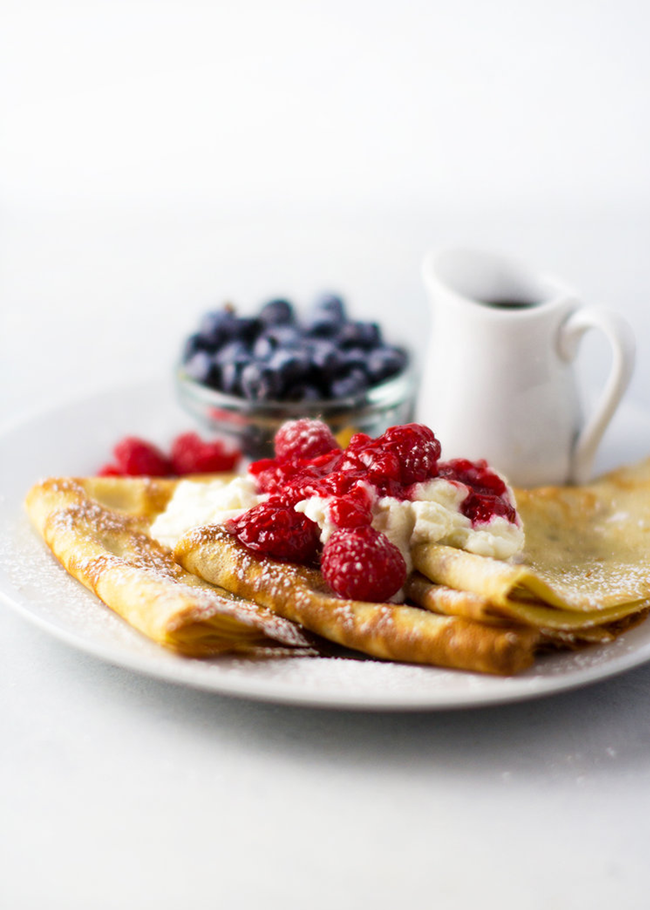

Raspberry Ricotta Crepes
If you're looking to make something sweet for your Valentine, look no further. Whether it's breakfast in bed or breakfast for dinner, you can't go wrong with these raspberry and ricotta cheese crêpes.
I started with my favorite crêpe recipe and added fresh fruit, ricotta cheese and a tasty raspberry sauce. This recipe is so simple, you really don't have to wait for a special occasion! In fact, these should become a staple at your Sunday brunch table.
You will need:
|
|
- In a blender, combine the milk and eggs, mixing on med-high until combined and foamy, about 10 seconds.
- Turn blender to low speed (or completely off if your blender gets too excited and starts over-flowing!), remove feed top and add sugar and salt.
- Replace top and blend on high for a few seconds then turn speed back to low (or off). Like before, add melted butter, brandy and vanilla, one at a time, blending for a few seconds between each addition.
- Turn blender off and add flour all at once. Replace feed top and blend until just combined.
- Pour batter through a sieve into a large measuring cup or bowl. This will ensure any tiny lumps of flour are removed!
- Place crêpe pan over medium-high heat and add a little butter - or - you can brush the pan with melted butter using a pastry brush (I opted for the pastry brush).
- Heat until butter just begins to smoke (but not burn), and pour 1/4 to 1/3 cup of batter into the pan. I found that 1/3 cup was perfect, but it will depend on the size of your pan. I used this omelette pan from Williams-Sonoma.
- Cook crêpe until bubbles just begin to form on the surface, then lift up the edge to check it's brownness. If your crêpe starts to burn before it's cooked through, turn your heat down. If it hasn't browned after two minutes, turn your heat up.
- When underside has browned, flip and cook another 30 seconds - 1 minutes until browned.
- Remove and place in oven on low-heat (around 150 F), on an over-safe plate.
- Continue until all batter has been used.